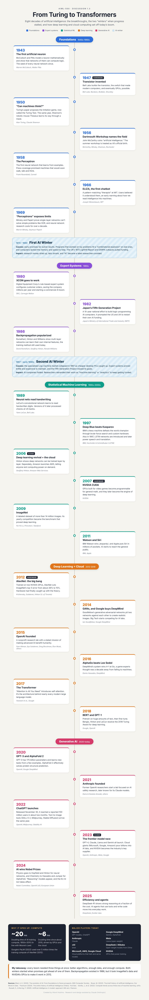

Introduction
AI has been "about to change everything" several times since the 1950s, and twice the hype collapsed into an "AI winter." Knowing why those booms and busts happened helps teams set realistic expectations for AI projects today. This artifact is a researched, one-page visual timeline of AI from 1943 to 2025, paired with practical lessons for people planning or approving AI work now.
Description
The timeline covers 28 milestones across five eras, from the first artificial neuron to today's AI agents:
| Era | Years | Example milestones |
|---|---|---|
| Foundations | 1940s–1960s | McCulloch–Pitts neuron, Turing's test, Dartmouth Workshop, the Perceptron, ELIZA |
| Expert systems | 1980s | XCON, Japan's Fifth Generation Project, backpropagation |
| Statistical machine learning | 1990s–2000s | Deep Blue, NVIDIA CUDA, ImageNet, Watson |
| Deep learning + cloud | 2010–2019 | AlexNet, GANs, AlphaGo, the Transformer, BERT and GPT-1 |
| Generative AI | 2020–today | GPT-3, AlphaFold 2, ChatGPT, the frontier model race, AI agents |
It also marks both AI winters with their causes and impact, includes a compute panel (AI training compute doubled about every 20 months before 2010 and about every 6 months since), lists today's major players, and ends with one takeaway: every AI boom needed better algorithms, enough data, and enough compute at the same time.
The timeline
Scroll inside the frame, or download the PDF for full resolution.

Added for This Portfolio: Lessons for Today's AI Projects
The original timeline explains what happened. For this portfolio, I added what it means for a team deciding whether and how to use AI today.
- Check all three ingredients. Backpropagation existed in 1986, but it didn't take off until ImageNet's data and NVIDIA's GPUs arrived in 2012. Before starting a project, ask whether you have the right method, enough quality data, and the compute to run it.
- Watch for promises that outrun the evidence. Both AI winters began when expectations got ahead of what the technology could deliver. Set scoped, measurable goals instead of broad claims.
- Plan for maintenance. Expert systems failed partly because their rules were expensive to keep up to date. Any AI system needs an owner and a plan for updates after launch.
- Expect change to keep speeding up. With compute doubling about every six months, the best tool today may not be the best next year. Design systems so the model can be swapped out.
Objective
My goal was to make AI's history quick to understand and useful for decisions. Most histories of AI are long articles or textbook chapters. I wanted a single visual a busy manager, student, or new team member could scan in a few minutes and come away knowing how we got here and why some AI efforts succeed while others stall.
Process
- Researched the history. For an AIML-500 discussion, I studied an IEEE Computer Society article on the evolution of AI and Our World in Data's history of AI, then checked details against additional sources, including research on compute trends.
- Organized by era and cause. I grouped milestones into five eras and focused on what changed in each one (new algorithms, new data, or new hardware) rather than just listing dates.
- Designed the visual. I built an alternating vertical timeline with color-coded eras, tags for hardware and cloud milestones, highlighted AI winter panels, and a compute summary. I also recreated it in Lucidchart.
- Revised for a portfolio audience. I added the "Lessons for Today's AI Projects" section so the artifact goes beyond history and helps readers make decisions, and I added a summary table so visitors can see the scope before opening the full timeline.
Tools and Technologies Used
| Tool | How I used it |
|---|---|
| IEEE Computer Society, Our World in Data, arXiv | Primary research sources |
| HTML/CSS | Designed the timeline layout and exported it to PDF and PNG |
| Lucidchart | Built an editable diagram version of the timeline |
| Claude (Anthropic) | Assisted with research and design; I chose the milestones, checked the facts, and wrote the takeaway |
| GitHub Pages | Hosts this portfolio |
Value Proposition
This timeline gives anyone on an AI project a shared, five-minute grounding in how AI got here, and turns that history into practical checks (method, data, compute, maintenance) that help teams avoid repeating the mistakes behind past AI winters.
Unique Value
- Causes, not just dates. Each era shows what actually changed, so readers see why progress happened, not only when.
- Hardware and cloud included. Most AI histories focus on algorithms. This one also tracks transistors, GPUs, CUDA, and cloud computing, which explain why progress sped up after 2010.
- Connected to practice. The added lessons come from what I see in my own work integrating systems: data, infrastructure, and maintenance matter as much as the model.
Relevance
Organizations are investing heavily in AI right now, and many decision-makers are being asked to approve projects without the context to judge them. In applied and forward-deployed engineering roles, part of the job is setting realistic expectations with customers. This timeline shows that I can research a broad topic, turn it into a clear visual, and connect it to the questions teams face today.
References
- Bhat, A. K. (2025). The evolution of AI: From foundations to future prospects. IEEE Computer Society.
- Roser, M. (2022). The brief history of artificial intelligence: The world has changed fast – what might be next? Our World in Data. https://ourworldindata.org/brief-history-of-ai
- Russell, S., & Norvig, P. (2020). Artificial intelligence: A modern approach (4th ed.). Pearson.
- Sevilla, J., Heim, L., Ho, A., Besiroglu, T., Hobbhahn, M., & Villalobos, P. (2022). Compute trends across three eras of machine learning. arXiv. https://arxiv.org/abs/2202.05924